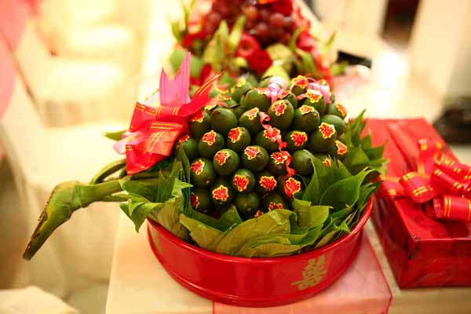
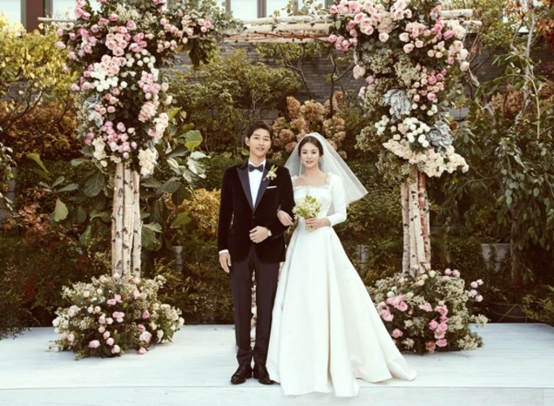
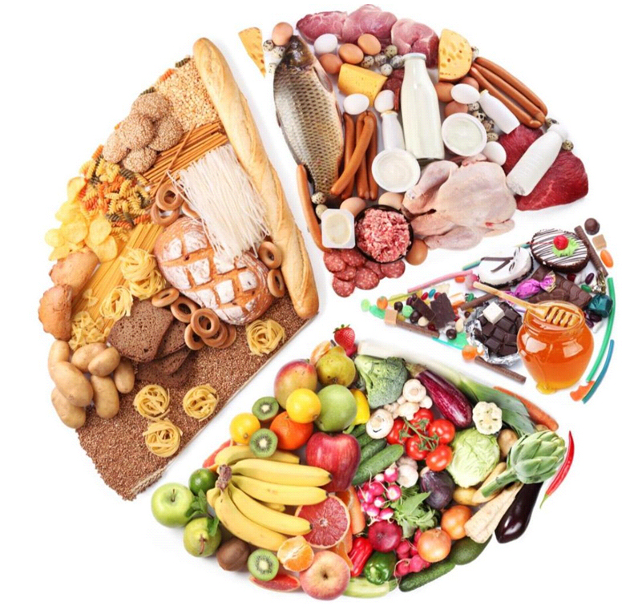
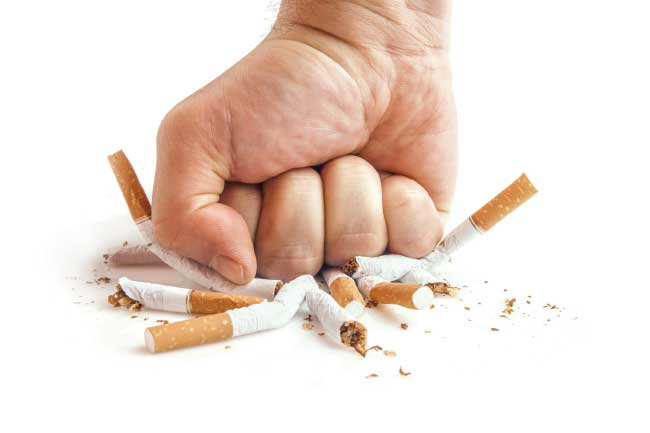

| Du lịch |
|
Các tour mới nhất
|
|
Các điểm du lịch nổi tiếng trên thế giới
|
Về đầu trang |
| Tình yêu và gia đình |
|
Trầu cau

Từ bao đời nay, dù cho sống ở miền bắc – trung – nam hay bất kỳ đâu thì lễ cưới hỏi của người Việt Nam không thể thiếu lễ vật trầu cau. Vậy tại sao trầu cau lại có ý nghĩa quan trọng với lễ cưới hỏi như vậy.
Ông cha ta cho rằng, cây cau có thân tròn luôn thẳng đứng như biểu trưng cho người quân tử, còn lá trầu hơi bầu bình xòe ngang che chở trên mặt đất như hình tượng người con gái Việt Nam. Bên cạnh đó hình ảnh dây trầu quấn quít leo trên thân cau như nói lên tình yêu bền vững của đôi trai gái nguyện trọn đời gắn kết mà khởi đầu là lễ cưới hỏi.
|
|
Đám cưới

Lễ cưới (hay hôn lễ) là một phong tục văn hóa trong hôn nhân nhằm thông báo rộng rãi về sự chấp nhận và/hoặc sự chứng kiến của gia đình, xã hội hay tôn giáo về cuộc hôn nhân của một cặp đôi. Lễ cưới được hiểu là một nghi lễ, và thường kết hợp với một tiệc cưới để trở thành đám cưới hoặc lễ thành hôn.
|
Về đầu trang |
| Sức khỏe |
|
Thức ăn nhiều dinh dưỡng

"Tôi thực sự rất muốn ăn uống lành mạnh nhưng nó khiến tôi phá sản mất" Câu nói này nghe có vẻ quen thuộc phải không? Nếu bạn là một cựu sinh viên thì chắc chắc bạn sẽ hiểu được cảm giác này. Thực tế, chẳng ai nói rằng ăn uống lành mạnh là phải chi trả nhiều tiền cả. Vì vậy, hãy cân bằng ngân sách chi tiêu hằng ngày của bạn bằng 25 loại thực phẩm rẻ giàu dinh dưỡng và tốt cho sức khỏe nhé!
|
|
Làm sao để bỏ thuốc lá

Cách cai nghiện thuốc lá vừa đơn giản, không tốn tiền lại hiệu quả, giúp bạn không còn lệ thuộc vào loại chất gây nghiện độc hại này nữa.
|
Về đầu trang |